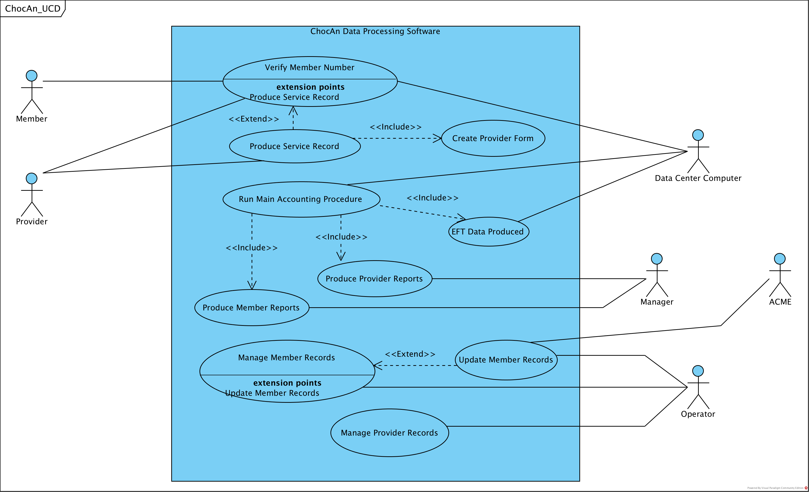

CS 200: Project 1 – ChocAn Data Processing Software Requirements
Team 5
Hansheng Li - - - - - - - - Julian Diaz - - - - - - - - - - Michael Hall - - - - - - - - - Trent Whalen - - - - - - - - - - - - Zach Humphries - - - - - - - - - -
11577987 - - - - - - - - - - - 11343674 - - - - - - - - - - - 11533484 - - - - - - - - - - - - 11643273 - - - - - - - - - - - - - - - 11345856 - - - - - - - - - - - - - - - - -
hli68@crimson.ua.edu - - jldiaz@crimson.ua.edu - - mphall1@crimson.ua.edu - - tdwhalen@crimson.ua.edu - - - zahumphries@crimson.ua.edu - -
17 Hours - - - - - - - - - - - - 21 Hours - - - - - - - - - - - 18 Hours - - - - - - - - - - - - - - 20 Hours - - - - - - - - - - - - - - 18 Hours- - - - - - - - - - - - - - - - -
Task Distribution for Project 1
In general, our team opted to share the work of this project very equitably among the members, with most of the important decisions and tasks completed in group meetings (of which we had five) and all team members participating in mostly equal parts in all tasks. Thus, it makes more sense for us to talk about how work was done for each section of the project, rather than a breakdown of each individual’s work.
Glossary:
All team members came to the first meeting with lists of potential glossary terms. A new list was compiled as a group, and the terms were divided evenly among the team members for defining. After all terms were defined, we met again and discussed revisions needed. Afterwards, Trent edited down the revised list to a final list of essential terms, which we all proof-read and approved individually. The result is the glossary submitted in the solution.
HL: %, JD: %, MH: %, TW: %, ZH: %
Use Case Diagram:
Similar to the Glossary, each member individually wrote lists of potential use cases and use case diagrams which were compiled and edited as a group between two meetings. Zach rendered the final .vpp version of the Use Case Diagram, with some minor content revising by Julian and Trent before the final submission.
HL: %, JD: %, MH: %, TW: %, ZH: %
Use Case Descriptions:
Again similar to Glossary, the list of use cases was divided between all members, with three writing two use cases and two who wrote three due to an uneven divide. We proof-read and edited all use cases as a group, with the exception of Zach’s use cases which Michael proof-read, resulting in the final versions that appear in the solution.
HL: %, JD: %, MH: %, TW: %, ZH: %
report.html:
The report.html file containing the solution and .zip file was compiled and submitted by Julian and proof-read by all team members.
In the following sections there are links embedded to relevant files.
Below is an alphabetized list of terms within our software product’s domain. These terms were carefully selected from the original requirements description document because of their importance in describing the universe within which our software product will function. Each term is an actor, use case, or class-object (or subset of these) within our software project.
Accounts Payable: A type of short-term debt to be paid off to creditors. E.g. money ChocAn owes it's providers.
ACME Accounting Services: A third-party organization contracted to handle financial procedures such as recording payments of membership fees, suspending members whose fees are overdue, and reinstating suspended members who have now paid what is owing.
ChocAn Data Center: Remote site where ChocAn servers (computers) store all relevant records such as member, provider, and service records, and where our software is primarily in use.
Chocoholics Anonymous (ChocAn): An organization offering services to help those suffering from an addiction to chocolate.
Consultation & Treatment: A form of health care service given to ChocAn members by its providers.
Electronic Funds Transfer (EFT) Data: A record file describing the amount of money ChocAn will transfer to a particular provider.
Health Care Professional (Provider): Those who provide health care services to ChocAn members. Receives a weekly provider report.
Interactive Mode: State of the Data Center computers allowing operators to add, delete, or update member and provider records.
Main Accounting Procedure: Reads the week's service records and provider’s forms produces all reports.
Manager: Employee at ChocAn. Receives a weekly summary report, and is able to produce any report upon request.
Member: Those who pay a monthly fee to ChocAn. Receives a weekly member report.
Member Card: Plastic card embossed with member's name and incorporating a magnetic strip encoding member number.
Member Number: 9-digit number used to identify ChocAn members.
Member Status: Statement describing a member's relationship to ChocAn. A member status may be suspended if the member has not paid fees for at least one month.
Member Record: Information stored at the ChocAn Data Center describing attributes about a ChocAn member.
Member Report: File generated listing services provided to a member that week, sorted in order of service date.
Operator: Employee at ChocAn Data Center capable of add, delete, and update member and provider records.
Provider Directory: File containing an alphabetically ordered list of service names and their corresponding codes and fees.
Provider Number: 9-digit number used to identify ChocAn providers.
Provider Record: Information stored at the ChocAn Data Center describing attributes about a ChocAn provider.
Provider Report: File generated listing services given by each provider that week, sorted in the order data was received by the computer, along with a summary of total fees owed and number of consultations.
Provider's Form: Verification form completed after generating a service record, used for billing ChocAn.
Service Code: 6-digit number used to identify a particular service provided by a ChocAn provider.
Service Record: Information stored on disk describing attributes of a service provided to a member by a provider.
The Use Case Diagram made in Visual Paradigm Community Edition for our software is shown below. We have defined our system box to be “ChocAn Data Processing Software”. We have six actors: Member, Provider, Data Center Computer, Manager, ACME, and Operator, each of which is defined in the glossary. After many iterations, our diagram resulted in ten use cases: Verify Member Number, Produce Service Record, Create Provider’s Form, Run Main Accounting Procedure, Produce Member Reports, Produce Provider Reports, Produce EFT Data, Manage Member Records, Update Member Records, and Manage Provider Records. Each use case is discussed in detail below in the Use Case Descriptions section.

The following Use Case Descriptions are step by step illustrations of how each use case that we outlined above should run successfully, as well as how they deal with alternative scenarios. They also provide context into how they fit together with other entities in the system. The order of the use cases is somewhat arbitrary; they are ordered by their position in the diagram from top to bottom, left to right.
Use Case: Verify Member Number
Context: Member provides member number to provider to confirm the member number is valid.
Actors: Member, Provider
Main Success Scenario:
1. The provider either keys in the member number provided by the member or slides the member’s card in the terminal.
2. The terminal dials the ChocAn Data Center Computer.
3. The ChocAn Data Center Computer is prompted to verify the member number.
4. The member number is valid and the word “Validated” is displayed on the provider’s terminal.
5. The provider chooses to utilize the Produce Service Record use case.
Extensions:
4a. If the member number is not valid, then the reason is displayed to the provider’s terminal (“Invalid number” or “Member suspended”).
5a. If the provider does not choose to utilize the Produce Service Record case, then the use case is ended.
Use Case: Produce Service Record Extends Verify Member Number
Context: Information about the service provided to the member is saved to disk.
Actors: Provider
Main Success Scenario:
1. Verify member number use case is successful.
2. The provider is prompted to enter the date of service in the format MM-DD-YYYY.
3. The provider is prompted to enter the service code.
4. The name of service (up to 20 characters) corresponding to the service code provided is displayed on the provider’s terminal.
5. The provider is prompted to verify the displayed service is correct.
6. If the provider chooses to enter comments about the service provided (up to 100 characters), then they may do so.
7. The system writes a record to disk which contains the following fields:
Current date and time (MM–DD–YYYY HH:MM:SS).
Date service was provided (MM–DD–YYYY).
Provider number (9 digits).
Member number (9 digits).
Service code (6 digits).
Comments (100 characters) (optional).
7. Utilize use case Create Provider Form.
Extensions:
5a. If the provider chooses not to enter comments, then the use case continues at step 6
Use Case: Create Provider’s Form
Context: For verification purposes the provider completes a form describing the service provided to the member, including billing information.
Actors: Provider
Main Success Scenario:
1. The system looks up the fee associated with the previously entered service code in the use case Produce Service Record.
2.The system prompts the provider to enter the current date and time, the date the service was provided, member name and number, service code, and fee to be paid.
3. The Provider’s Form looks like this:
Date of service (MM–DD–YYYY).
Date and time data were received by the computer (MM–DD–YYYY HH:MM:SS).
Member name (25 characters).
Member number (9 digits).
Service code (6 digits).
Fee to be paid (up to $999.99).
Extensions:
None.
Use Case: Run Main Accounting Procedure
Context: Weekly procedure run at the ChocAn Data Center that reads the week's file of services provided and prints a number of reports.
Actors: Data Center Computer
Main Success Scenario:
1. 12:00 am every Friday the Main Accounting Procedure initiates.
2. All ChocAn Member service records from the week are accessed and read.
3. New report files are created for each Provider and each Member.
- - 3.1 Produce Member Reports use case
- - 3.2 Produce Provider Reports use case
5. A record consisting of electronic funds transfer (EFT) data is written to a disk.
- - 5.1 Refer to the Produce EFT Data use case
Extensions:
None
Use Case: Produce Member Reports
Context: List of weekly Provider service records produced during the Main accounting Procedure and at any time by a Manager
Actors: Data Center Computer, Manager
Main Success Scenario:
1. 12:00 am every Friday the Main Accounting Procedure initiates.
2. All ChocAn Member service records from that week are accessed and read.
3. A new report file for each member is created.
- - 3.1 Each filename consists of the Member's name followed by the date the report is produced.
- - 3.2 The file is populated with basic Member info at the top (name, number, address, member number)
- - 3.3 The file is then populated by data from all of the Member's records from the week, in the order they were recorded.
- - 3.4 The Member Report looks like this:
Member name (25 characters).
Member number (9 digits).
Member street address (25 characters).
Member city (14 characters).
Member state (2 letters).
Member ZIP code (5 digits).
For each service provided, the following details are required:
Date of service (MM–DD–YYYY).
Provider name (25 characters).
Service name (20 characters).
Extensions:
1a. Instead of the Main Accounting Procedure, a ChocAn Manager initiates the production of provider reports.
2a. Only service records specified by the Manager are accessed and run.
Use Case: Produce Provider Reports
Context: List of weekly Provider service records produced during the Main Accounting Procedure and at any time by a Manager
Actors: Data Center Computer, Manager
Main Success Scenario:
1. 12:00 am every Friday the Main Accounting Procedure initiates.
2. All ChocAn Provider service records and provider forms from that week are accessed and read.
3. A new report file for each provider is created.
- - 3.1 Each filename consists of the Provider's Name followed by the date the report is produce.
- - 3.2 The file is populated with basic Provider info at the top (name, number, and address)
- - 3.3 The file is then populated by data from all of that individual's provider's forms from that week, in order of submission.
- - 3.4 At the end of the report, a summary is printed consisting the number of consultations and total fees due to that provider.
- - 3.5 The Provider Report will look like this:
Provider name (25 characters).
Provider number (9 digits).
Provider street address (25 characters).
Provider city (14 characters). Provider state (2 letters).
Provider ZIP code (5 digits).
For each service provided, the following details are required:
Date of service (MM–DD–YYYY).
Date and time data were received by the computer (MM–DD–YYYY HH:MM:SS).
Member name (25 characters).
Member number (9 digits).
Service code (6 digits).
Fee to be paid (up to $999.99).
Total number of consultations with members (3 digits).
Total fee for week (up to $99,999.99).
Extensions:
1a. Instead of the Main Accounting Procedure, a ChocAn Manager initiates the production of provider reports.
2a. Only the service records and provider forms specified by the Manager are accessed and read.
Use Case: Produce EFT Data
Context: At the end of Main Accounting Procedure, Provider fees are recorded for payment purposes.
Actors: Data Center Computer
Main Success Scenario:
1. Fridays at 12:00 am, the Main Accounting Procedure produces provider reports.
2. A new Electronic Funds Transfer (EFT) file for each provider report is created.
- - 2.1 The file is populated with the Provider name, number, and amount to be transferred, all read from the provider's report.
Extensions:
None.
Use Case: Manage Member Records
Context: Add, update, or delete member records
Actors: Operator
Main Success Scenario:
1. The system verifies it is in interactive mode.
2. Using a menu, the operator selects from the following:
- - 2.1 Add Member Records:
- - - - 2.1.1 The operator is prompted to enter the new member's name in the format First Last (e.g. John Doe).
- - - - 2.1.2 The operator is prompted to enter the new member's street address.
- - - - 2.1.3 The operator is prompted to enter the new member's city.
- - - - 2.1.4 The operator is prompted to enter the new member's state in the format of a postal abbreviation.
- - - - 2.1.5 The operator is prompted to enter the new member's ZIP code.
- - - - 2.1.6 The system generates a unique member number for the new member, and the new member's status is set as "active".
- - - - 2.1.7 The new member record is saved to the ChocAn Data Center Computer.
- - 2.2 Update Member Records: Utilize use case Update Member Records.
- - 2.3 Delete Member Records:
- - - - 2.3.1 The operator keys in the member number of the resigned member.
- - - - 2.3.2 The corresponding member name is displayed to the operator.
- - - - 2.3.3 The operator is prompted to verify the displayed member is the one to be deleted.
- - - - 2.3.4 The member record is removed from the ChocAn Data Center computer.
- - 2.4 Exit: The use case is ended.
Extensions:
1.a If the system is not in interactive mode, then the use case is ended.
2.3.1a The operator enters an invalid member number:
- - 2.3.1a.1 The system displays "Invalid number".
- - 2.3.1a.2 The use case is ended.
2.3.3a If the displayed member is not to be deleted, then the use case is ended.
Use Case: Update Member Records Extends Manage Member Record
Context: Specific information within a member record is changed by Acme each evening at 9pm or by an Operator.
Actors: Acme, Operator
Main Success Scenario:
1. The user keys in the member number of the member record to be updated.
2. The corresponding member name is displayed to the user.
3. The user is prompted to verify the displayed member is the one to be updated.
4. Using a menu, the user selects from the following:
- - 4.1 Update Name: The user is prompted to enter the new member name in the format First Last (e.g. John Doe).
- - 4.2 Update Address:
- - - - 4.2.1 The user is prompted to enter the new street address of the member.
- - - - 4.2.2 The user is prompted to enter the new city of the member.
- - - - 4.2.3 The user is prompted to enter the state of the member in the format of a postal abbreviation.
- - - - 4.3.4 The user is prompted to enter the new ZIP code of the member.
- - 4.3 Update Member Status: The user is prompted to enter the new member status of the member (e.g. suspended).
- - 4.4 Exit: The use case is ended.
5. The system rewrites the member record and saves the changes to the ChocAn Data Center computer.
Extensions:
1a. The user enters an invalid member number:
- - 1a.1 The system displays "Invalid number".
- - 1a.2 The use case is ended.
3a. If the displayed member is not to be updated, then the use case is ended.
Use Case: Manage Provider Records
Actors: Operator
Context: ChocAn operators add, update, or delete provider records.
Main Success Scenario:
1. The system verifies it is in interactive mode.
2. Using a menu, the operator selects from the following:
- - 2.1 Add Provider:
- - - - 2.1.1 The operator enters the provider's name in the format First Last (e.g. John Doe) up to 25 characters.
- - - - 2.1.2 The operator enters the provider's street address.
- - - - 2.1.3 The operator enters the provider's city.
- - - - 2.1.4 The operator enters the provider's state in the format of a postal abbreviation.
- - - - 2.1.5 The operator enters the provider's ZIP code.
- - - - 2.1.6 The provider is assigned a provider number.
- - - - 2.1.7 The use case is ended.
- - 2.2 Update Provider:
- - - - 2.2.1 The operator enters the provider number.
- - - - 2.2.2 The corresponding provider name is displayed.
- - - - 2.2.3 The operator verifies that the displayed provider is the one to be updated.
- - - - 2.2.4 Using a menu, the operator selects from the following:
- - - - - - 2.2.4.1 Update Name:
- - - - - - - - 2.2.4.1.1 The operator enters the new name.
- - - - - - 2.2.4.2 Update Street Address:
- - - - - - - - 2.2.4.2.1 The operator enters the new street address.
- - - - - - 2.2.4.3 Update City
- - - - - - - - 2.2.4.3.1 The operator enters the new city.
- - - - - - 2.2.4.4 Update State
- - - - - - - - 2.2.4.4.1 The operator enters the postal abbreviation of the new state.
- - - - - - 2.2.4.5 Update ZIP code
- - - - - - - - 2.2.4.5.1 The operator enters the new ZIP code.
- - - - - - 2.2.4.6 Exit: The use case is ended.
- - 2.3 Delete Provider:
- - - - 2.3.1 The operator enters the provider number of the provider to be removed.
- - - - 2.3.2 The corresponding provider name is displayed.
- - - - 2.3.3 The operator verifies that the displayed provider is the one to be deleted.
- - - - 2.3.4 The provider is removed from the ChocAn Data Center computer.
- - 2.4 Exit: The use case is ended.
Extensions:
1.a If the system is not in interactive mode, the use case is ended.